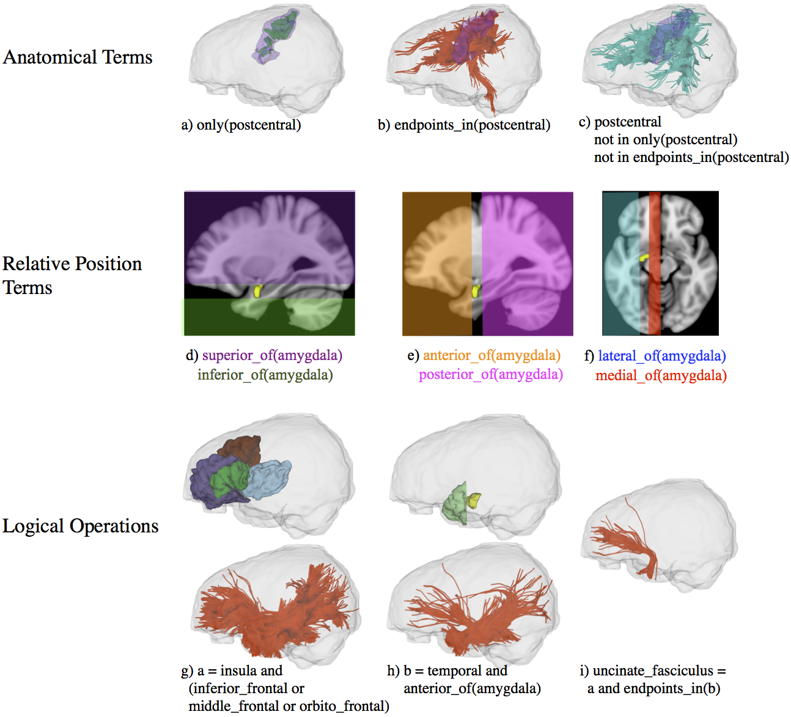

Example WMQL usage¶
To run a WMQL script over and automatically extract a set of white matter tract bundles you will need:
A full-brain tractography in VTK format: It must be a vtkPolyData object where all the cells are lines.
A brain parcellation, such as the wmparc.mgz file obtained from freesurfer in the same space as the full-brain tractography.
A WMQL query file
Once all of these files are setup, the tract bundles are obtained by issuing the command:
tract_querier -t tractography_file.vtk -a wmparc.nii.gz -q wmql_script.qry -o tract_output
where tractography_file.vtk is the full-brain tractography, wmparc.nii.gz is the brain parcellation, wmql_script.qry is the WMQL script and tract_output is the prefix for the output bundles.
There is an example dataset available for download which you can use after following the Installation Instructions.
WMQL Terms¶
WMQL queries are based on combinations of the following terms


First WMQL example script: Cortico-Spinal Tract¶
#Import the freesurfer label definitions from the Desikan atlas (Desikan et al 2006)
import FreeSurfer.qry
#Define bi-laterally the cortico-spinal tract
cortico_spinal.side = (
endpoints_in(brain_stem) and
(endpoints_in(precentral.side) or endpoints_in(postcentral.side))
)
More complex example: The Uncinate Fasciculus¶
#Import the freesurfer label definitions from the Desikan atlas (Desikan et al 2006)
import FreeSurfer.qry
#Define the temporal lobe but ignore it on the output using the |= operator
temporal.side |= (
(entorhinal.side or parahippocampal.side or temporalpole.side or
fusiform.side or superiortemporal.side or middletemporal.side or
inferiortemporal.side or transversetemporal.side or bankssts.side)
)
temporal_anterior_section.side |= temporal.side and anterior_of(amygdala.side)
#Define the frontal regions connected to the uncinate fasciculus
inferior_frontal_gyrus.side |= (
parsopercularis.side or parstriangularis.side or parsorbitalis.side
)
orbito_frontal_gyrus.side |= (
lateralorbitofrontal.side or
medialorbitofrontal.side
)
middle_frontal_gyrus.side |= caudalmiddlefrontal.side or rostralmiddlefrontal.side
#Define bi-laterally the uncinate-fasciculus
uncinate.side = (
endpoints_in(temporal_anterior_section.side) and
insula.side and
(
inferior_frontal_gyrus.side or
middle_frontal_gyrus.side or
orbito_frontal_gyrus.side
)
)
Globbing example: Commissural Tracts¶
The whole point of this example is showing the use of glob expressions to define a region such as the left hemisphere
#Import the freesurfer label definitions from the Desikan atlas (Desikan et al 2006)
import FreeSurfer.qry
#Define hemispheres using glob patterns ( http://en.wikipedia.org/wiki/Glob_(programming) )
hemisphere.left |= '*.left'
hemisphere.right |= '*.right'
#Define all the commissural tracts
all_commissural = endpoints_in(hemisphere.left) and endpoints_in(hemisphere.right)